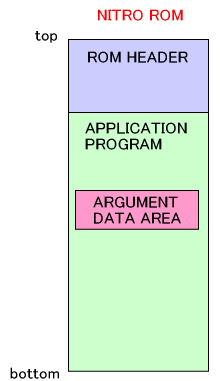
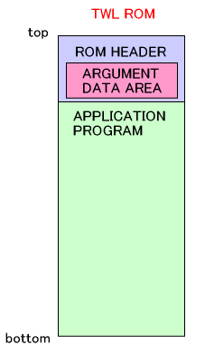
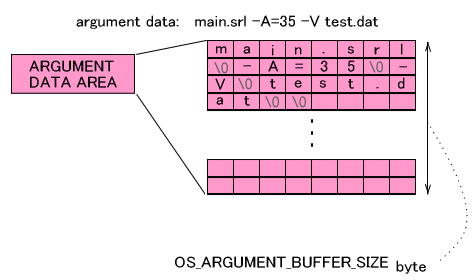

TWL-SDK には、srl の実行時に引数を与え、プログラムの中でそれを取得し動作を決定するための仕組みが用意されています。コンパイルすることなくパラメータを変更して同じ ROM を実行できるために、デバッグや自動テストなどに有効です。ただしこの仕組みは開発時に使用することだけを想定していますので、FINALROM ビルドでは使うことが出来ません。
また、HYBRID ROM を NITROモードで動作させたときも使用出来ません。
引数データを格納するための領域は NITRO ROM と TWL ROM で異なります。
NITRO ROM では、アプリケーションの変数領域に確保されます。この領域は ARM9
の .version セクションに入ります。
TWL ROM では、ROM ヘッダ領域に確保されます。

引数データ領域に、プログラム名とともに引数データが格納されます。例えば main.srl という srl ファイルに -A=35 -V test.dat という引数が与えられる場合、以下のように格納されます。

引数データ領域は OS_ARGUMENT_BUFFER_SIZE バイトの大きさを持ちます。この値は NITRO, TWL ともに 256 と定義されています。
srl ファイルに対して引数データを設定するツールとして buryarg や buryarg.TWL が用意されています。
NITRO ROM と TWL ROM で使用するツールが異なります。NITRO ROM に対しては buryarg を、TWL ROM に対しては buryarg.TWL を用いて下さい。
なお、srl ファイルではなく、その代わりに NITRO ROM の場合には nlf ファイルを、TWL ROM の場合には tlf ファイルを指定することも出来ます。その場合は nlf ファイルまたは tlf ファイルを解析してROM を構成するファイルを書き換えます。またこの場合、引数データ領域に書き込まれる「プログラム名」は書き換えたファイルの名前になります。
srl ファイルに対して引数データを埋め込んだ場合は、nlf ファイルや tlf ファイルから起動しても引数データは反映されていません。その逆に nlf ファイルや tlf ファイルに対して引数データを埋め込んだ場合は srl ファイルから起動しても引数データは反映されていませんので、埋め込んだ対象ファイルから起動するようにしてください。
srl ファイルに埋め込んだ引数データはプログラム側からは OS_GetArgc() と OS_GetArgv() で読み込むことが出来ます。これらの関数仕様は C 標準関数の argc() や argv() に準拠しており、先ほどの例( main.srl に -A=35 -V test.dat という引数を与えた例 )だと OS_GetArgc() の値は 3 となります。そして、OS_GetArgv(0) は "main.srl" 、OS_GetArgv(1) は "-A=35"、OS_GetArgv(2) は "-V"、OS_GetArgv(3) は "test.dat" です。
また、引数をオプション文字列として扱うために OS_GetOpt() が用意されています。
OS_GetArgc() や OS_GetArgv() がアクセスする引数データ領域を変更する用途で OS_GetArgumentBuffer() と OS_SetArgumentBuffer() という関数が用意されています。
OS_GetArgumentBuffer() は現在の引数領域へのポインタを取得します。OS_SetArgumentBuffer() は指定の領域を引数データ領域とします。
また、指定の文字列を引数データ形式でバッファに書き込むために OS_ConvertToArguments() が用意されています。
この引数を与えることの出来る仕組みは開発用途で用意されたものですので、FINALROM
ビルドの ROM で使用することは出来ません。ROM 外からパラメータを与えることが出来る仕組みが残っていることで、思わぬ不具合が発生したりすることを防ぐという意味もあります。そのため、FINALROM
ビルドでは OS_GetArgc() は必ず 0 を返し、OS_GetArgv() は必ず NULL を返すことになっています。
NITRO ROM の FINALROM ビルド版では引数データを格納する領域さえ用意されません。従って、FINALROMビルドの
NITRO ROM には buryarg ツールを適用することが出来ません。一方、TWL ROM では ROMヘッダの一定の領域が引数データ領域になっているので
FINALROM 版であっても buryarg.TWL ツールを適用することは出来ます。しかし上に記述したように取得できる値は
0 であったり NULL であったりの一定のものでしかありません。
buryarg や buryarg.TWL による引数の埋め込みと、loadrun や loadrun.TWL による実行とを一度に指定するスクリプト nitrorun と nitrorun.TWL が用意されています。
2008/07/10 初版